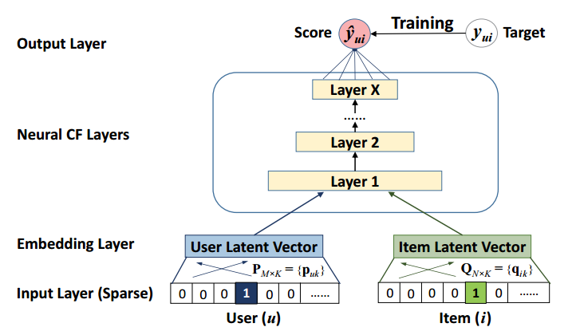
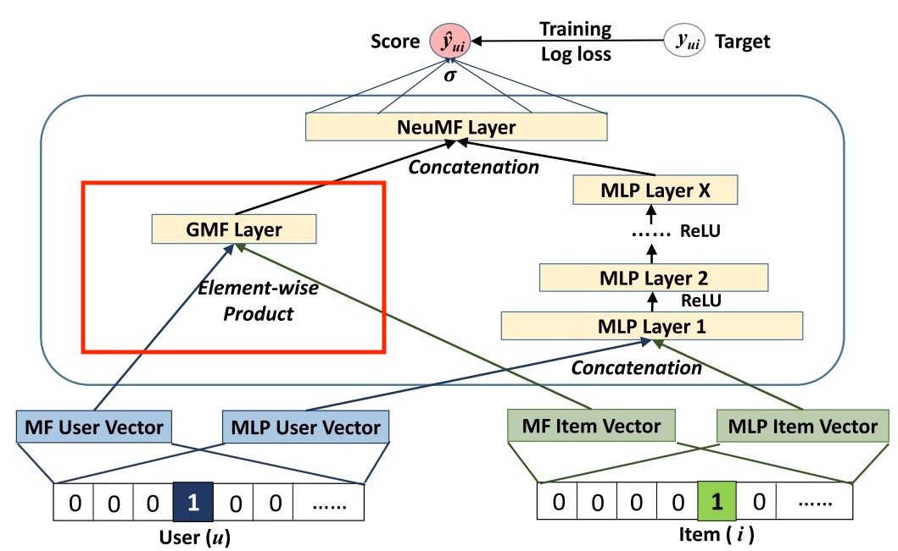
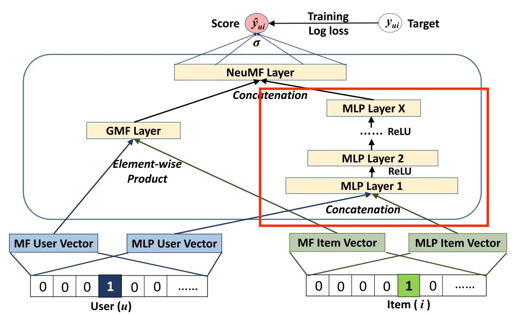
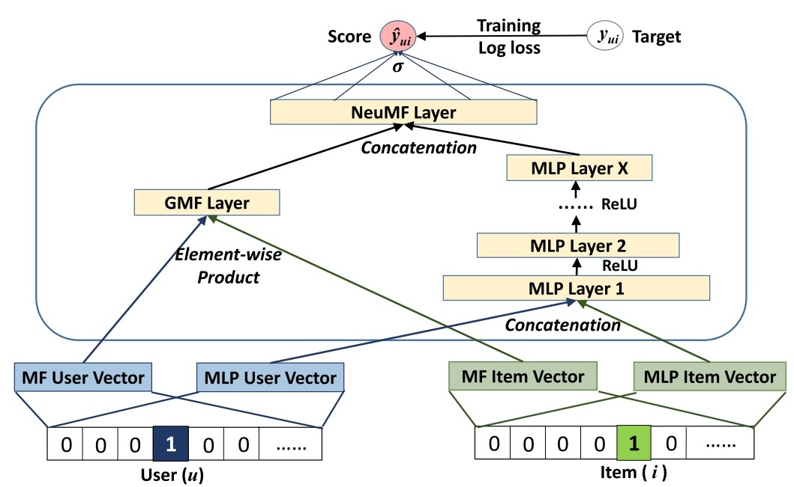

NeuralCF, 从名字就可以看得出来, 是将神经网络, 或者说深度学习引入推荐系统的协同过滤.
这是文章地址, 算法提出地相对比较早(大概2017年), 有一定的创新. 效果并没有多么明显的提升, 在实际的生产环境中使用也存在一些问题, 但是作为一种新方法, 还是有必要学习的.
前言
在前面的文章中, 介绍了经典的协同过滤方法, 使用用户与物品的交互记录, 通过相似度评估, 来进行推荐. 然后矩阵分解方法, 可以说是经典协同过滤的升级版方法, 在数据稀疏的时候, 可以有更好的表现.
后来有一天, 由于算力, 算法, 数据的发展, 深度学习火了起来, 神经网络理论上强大的”万能”拟合, 人们将其运用到了方方面面. 在推荐系统的协同过滤中, 就出现了NeuralCF.
回想之前的矩阵分解方法, 用户与物品的Embedding交互方式, 为内积, 其实这本身就是一种非常好的交互方式:
解释性强
内积越大的两个Embedding, 对应地在特征空间中”距离”越近.
操作简单
当训练好了模型以后, 就可以将用户与物品, 和对应的Embedding绑定, 后续需要时直接取用即可, 内积的计算也是非常快的.
神经网络的一大优势, 是复杂的非线性的表示或者拟合能力, 可不可以用神经网络来替换内积的交互方式, 以获得更好的效果呢?
原理
NeuralCF本身是提出了一种框架, 框架的核心, 是用神经网络来代替原本的内积交互方式, 或者进行扩展:

如上图, 下面是Embedding Layer; 中间是NeuralCF Layer, 这里还没有给出明确的结构, 只是说这里是神经网络; 上面是Output Layer, 与具体学习任务相关.
下面就先介绍NeuralCF的作者在训练时采用的学习任务, 然后再说明具体的神经网络结构.
隐式反馈建模
想想看, 我们每天会在各种APP, 网站上, 看各种各样的文章, 视频等, 很多时候看完就关了; 或者没看完收藏一下; 或者觉得某一条评论有趣, 跟评一句”确实”; 觉得有意义, 可能会进行点赞, 转发…
但是有多少时候, 会去进行打分呢? 其实现在一些短篇的文章或者视频, 一般是没有打分的, 打分意味着需要思考(我是给4分, 还是给5分呢), 但用户来就是图一乐, 为什么要思考呢. 与之对应的, “喜欢”, “投币”这种bool型的选项, 更加人性化, 但即便如此, 也是经常看了就关了, 经常不会去点赞神马的, 至少我是这样, 有时候是忘了, 有时候是懒得点, 有时候是看点赞都这么多了, 我就不点了吧○( ＾皿＾)っHiahiahia…
所以, 各种隐式行为, 即间接反映对物品喜好(如搜索, 点击等), 是广泛存在的数据; 而显式行为, 即直接反映对物品喜好(如评分, 购买等), 是相对稀少的数据. 基于此, NeuralCF的作者采用的是隐式反馈建模, 即通过一些隐式交互方式的定义, 来制定标签: 标签1表示某用户与某物品直接存在交互, 反之则为0.
进一步, 正样本(标签为1)是通过是否存在隐式交互反馈得到的, 那么负样本(标签为0)呢, 要知道对于一个用户来说, 通常有交互的物品是少数, 没有交互的物品是大多数. 这里采用了负采样的方法, 即从没有交互的物品中, 随机采取一些来作为负样本, 这也是非常经典且有效的做法了.
GMF
一开始提到了, NeuralCF中间的神经网络层, 可以是各种形式, 而作者给到的其中一种, 就是GMF(Generalized Matrix Factorization), 结构如下图的左边部分:

需要注意的是, 上图中GMF是作为整体模型的一部分, 但是GMF是可以单独作为一个模型的.
将用户和物品对应的Embedding, 进行元素积, 再通过一层全连接输出层, 本质上就是学习的内积, 就是一个MF, 所以也叫做GMF.
MLP

上图中的右侧, 为MLP(Multilayer Perceptron), 将用户与物品的Embedding拼接后, 输入多层全连接神经网络, 学习它们之间的非线性关系.
MLP同样可以单独作为一个模型来进行学习.
这里也没啥好说的, 过.
NeuralCF
好的, 现在把球传给NeuralCF.

前面的GMF学习到了用户与物品Embedding之间内积的模式, 而MLP学习到了复杂的非线性模式, 在NeuralCF这里, 把两者结合了起来.
怎么结合的呢?
首先对于输入的原始Embedding, GMF和MLP是分开的两套, 这里也容易理解, 因为是两种模式(内积与非线性), 所以分开以后学习起来会更好一些.
然后在经过GMF和MLP后, 将它们的输出向量进行拼接, 再经过一个全连接网络进行输出预测.
从结构上来说, 是比较简单的, 就不多说了, 下面着重对NeuralCF进行一些其它方面的探讨.
探讨一: 模型具体是如何训练的?
由于这里有两套子模型, 两套Embedding, 所以在进行训练时, 可以先分别训练GMF和MLP, 优化器可以使用Adam, 学得更快.
然后再将学习好的GMF和MLP放在一起进行学习, 这时优化器使用SGD(学习率小一些), 更容易收敛.
探讨二: 为什么用了MLP来学习用户与物品之间的非线性关系, 还要用到GMF, GMF难道不会拖强大的MLP的后腿吗?
然鹅真实的情况是, GMF的模型效果优于MLP. 其实MLP的强大, 只是理论上的, 在这个问题上的表现, 并不如GMF的内积来得好.
那这能我们带来哪些启发呢? 我认为有两点:
神经网络的结构.
单说结构化数据, MLP当然是经典的网络结构, 但其实还有很多的结构可以尝试.
除了非线性, 还有一个重点是特征之间的交互方式. 比如MLP是特征之间相加, 那么是否可以添加特征之间相乘, 内积, 外积, 二阶, 三阶等这样的交互呢.
从数学上来理解, 要去拟合一个目标, 最好的情况当然是选择的公式, 和目标正好契合. 但一般对于复杂的模式, 我们事先并不知道怎样的公式是好的, 这时候一个方法就是用各种形式的公式(模型)去尝试, 从中找到一个近似最优解.
浅层与深层的结合.
在这里, 也就是NeuralCF, 通过GMF与MLP的结合, 在模型效果上是有提升的. 如果把GMF看成是浅层的网络, 那么也就是说, 浅层网络得到的信息, 与深层网络得到的信息, 对最终结果都有帮助.
浅层的信息并不能表示全部, 深层的信息不见得比浅层好. 关于这一点, 其实在其它一些模型(如Wide&Deep)中, 体现得更好.
探讨三: 实用性如何.
在推荐系统中, 协同过滤一般是作为召回模型, 而召回模型的特点, 或者说要求是能够迅速地完成对海量数据的处理, 从中筛选出少量的用户可能感兴趣的物品.
那么一般的协同过滤方法, 或者矩阵分解方法能够完成吗. 对于经典协同过滤方法来说, 计算保存好用户之间或者物品之间的相似度, 然后就可以选择Top-k进行快速推进. 矩阵分解在得到各个用户和物品的Embedding后, 可以在很快的时间内(基于相邻向量快速搜索), 找到与用户Embedding相似的物品.
但是NeuralCF就有问题, 对于一个用户来说, 对于每个物品都需要一起过一次NeuralCF模型, 这个不是说不能做, 但是在召回这里相比其它一些方法, 慢了不少. 在效果没有太明显提升的情况下, 不是那么实用.
小结
总体来说, NeuralCF是一个有意义的模型, 将神经网络引入协同过滤, 采用将GMF与MLP结合的方式, 使得模型效果得到了提升.
从NeuralCF也可以得到一些启示, 包括MLP并非万能, 我们可以尝试各种不同的模型结构, 采取各种不同的特征交互方式; 浅层网络与深层网络对要学习的目标可能都有帮助, 可以结合起来.
不过NeuralCF作为一个召回模型来说, 也存在一些问题, 使得其实用性并不强.